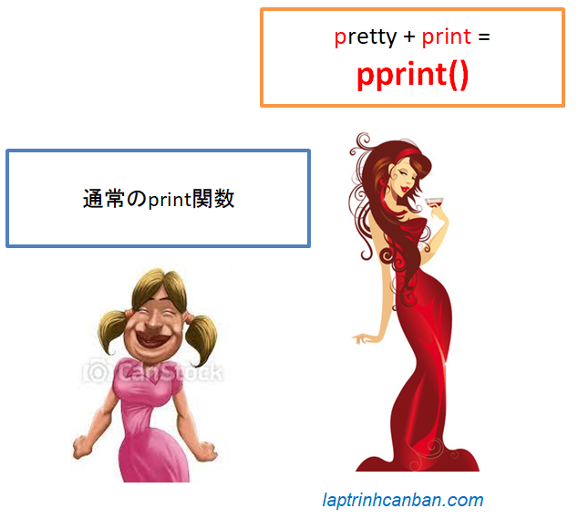

記事掲載：https://laptrinhcanban.com/ja
Pythonのpprintの使い方について説明します。pprint関数を使用することにより、リストや辞書のリストなどの複雑な構造化データをマートに美しく出力ができ、通常のprint関数の弱点を克服できます。
Pythonでpprint関数を使用する方法は次のとおりです。
- 行あたりの最大文字数を指定: width引数
- ネストされたデータの深さを指定: depth引数
- 行ごとのインデントを指定： indent引数
- 多くの要素を含むリストの改行数を最小限に抑える: compact引数
Pythonのpprint関数
Pythonのpprint関数とは
Pythonのpprint関数とはpprintモジュールの関数であり、リストや辞書のリストなどの複雑な構造化データを微調整してからきれいに画面に出力するための関数です。pprintとは英語のpretty-printから省略されたものであり、「きれいに出力」との意味があります。
その名の通り、pprint関数は、2次元リスト（リスト内のリスト）や辞書などの複雑な構造化オブジェクトを、すっきりとしたスマートな方法で画面に出力できます。
pprint関数は、Pythonの通常のprint関数を克服するために生まれました。このprint関数はリストや辞書を画面に出力することもできますが、インターフェイスは見苦しく、画面に表示した後のデータを観察するのは困難です。

たとえば、次の複雑な構造のリストがあります。
l = [{'Name': 'Yamada', 'Age': 20, 'Points': [80, 20]}, |
通常のprint（）メソッドでは、画面に出力された結果を次のように確認するのは困難です。
print(l) |
ただし、pprint関数で微調整機能をを使用することにより、上記の複雑な構造を持つリストを次のようにすっきりときれいに出力できます。
import pprint |
import pprint python
Pythonでpprint関数を使用するには、まず、それを含むpprintモジュールを次のようにプログラムにインポートする必要があります。
import pprint |
Pythonでのpprint関数の構文と使用法
Pythonのpprint関数には、次のようなかなりの数の引数を持つ一般的な構文があります。
pprint.pprint ( object, stream=None, indent=1, width=80, depth=None,compact=False, sort_dicts=True )
そこで：
width: 出力幅（文字数）を指定indent: インデント幅を指定depth: 出力要素の深さを指定compact:改行数を最小限に抑える
以下では、これらの引数を使用してpprint関数の基本的な使用法について説明します。
出力行あたりの最大文字数を指定する | width引数
デフォルトでは、pprint関数は行ごとに最大80文字を出力し、文字数が満たされたら自動的に行を分割します。この引数を省略した場合でも、width引数のデフォルト値になります。
ただし、width引数を指定することで、出力される行の最大文字数（幅）を自由に調整できます。
また、出力される1行あたりの最大文字数が変更されるため、画面に出力される行数を変更することもできます。
たとえば、出力される1行あたりの最大文字数、および出力される行数は、幅の値によって次のように異なります。
pprint.pprint(l) |
尚、大きな値でwidthを指定すると、pprint関数の結果は、通常のprint関数を使用した場合と同じになります。
pprint.pprint(l, width=500) |
ネストされたデータの深さを指定 | depth引数
リストまたは辞書にネストされたデータが含まれている場合、pprint関数を使用すると、そのネストされたデータのすべての子要素が画面に出力されます。
ただし、depth引数の値をカスタマイズすることで、各要素の出力される子の最大数（深さ）を指定することもできます。
また、ネストされたデータに過剰な数の子要素が含まれている場合(depthよりデカい場合)これらの子要素は...との省略記号で画面に出力されます。
pprint.pprint(l, depth=1) |
width引数とdepth引数の組み合わせを使用して、画面上の行数を次のように指定することもできます。
pprint.pprint(l, depth=2, width=40) |
出力行ごとのインデントを指定 | indent引数
デフォルトでは、pprint関数を使用するときにインデント幅の１で各行が画面に出力されます。ただし、indent引数でインデント幅を調整するこももできます。
pprint.pprint(l) |
次のような幅や深さなどの他の引数と一緒に使用することもできます。
pprint.pprint(l, indent=4, width=4, depth =2) |
- 参照: Pythonでのインデント
改行数を最小限に抑える| compact引数
Pythonで要素が多すぎるリストを出力するときに、要素の合計文字数が出力された行の長さに合わない場合、Pythonは自動的に行を分割し、次の例のように各要素を画面に出力します。
import pprint |
Python 3.4以前のバージョンでは、上記の方法が唯一の使用方法であるため、改行の数が多くなりすぎると、ユーザーにとって非常に煩わしい場合があります。
ただし、幸いなことに、Python3.4以降では、引数compactがpprintPython関数に追加されています。
この時点で、上記のように要素が多すぎるリストを出力するとき、compact = Trueとのcompact引数を指定すると、改行数を最小限に抑え、出力の結果も見栄え良くなります。
たとえば、上記のリストは、次のように3回の改行だけで画面に出力出来ます。
pprint.pprint(l_long, width=40, compact=True) |
Pythonのpprint関数をExcelファイルの処理へ適用
pprint関数は、複雑な構造化オブジェクト、特に2次元リストを処理するときに非常に強力です。
この利点を活かして、Excelファイルに含まれているデータをpprint関数ですっきりに確認することが出来ます。
たとえば、Pythonでのexcelファイルの読み取りに関するチュートリアルでは、ecxelファイル全体を2次元リスト（リストのリスト）の形式で読み取るようにガイドしました。Excelファイルの内容を読み取った後、pprint関数を使用して、結果をきれいに画面に出力できます。
たとえば、次の内容のExcelファイルがあります。

Pythonでpprint関数を適用することにより、上記のExcelファイルの内容を次のように画面にきれいに出力できます。
[[None, 'A', 'B', 'C'], |
まとめ
上記 Kiyoshi はPythonのpprintでリストや辞書をスマートに美しく出力する 方法について説明しました。レッスンの内容をよりよく理解するために、各例文を練習をしてください。
そして、次のレッスンでPythonの知識についてもっと学びましょう。
URL Link
ホーム › 初心者向けのpython学習>>04. pythonの標準入出力